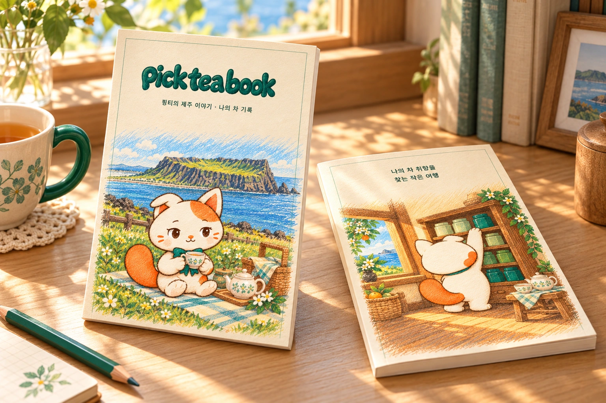

YOUR LITTLE TEA CABINET
처음은 한 권으로,
그다음은 내 취향대로.



A STORY THAT BECOMES YOURS
핑티가 시작한 이야기,
그다음은 나의 한 잔.
제주를 여행하는 핑티의 동화를 읽고,
좋았던 향과 오늘의 기분을 기록해요.
한 장씩 채울수록 내 취향이 눈에 들어옵니다.
FIVE BLENDS, FIVE LITTLE MOMENTS
오늘은 어떤 핑티가
마음에 들어오나요?
감귤 녹차부터 구수한 곡물차와 깊은 홍차까지.
좋아하는 맛 한 가지를 10개입 상자로 만나보세요.


ABOUT PICK TEA UP
차를 고르는 일은,
나를 알아가는 작은 시작.
어떤 향이 좋았는지, 어느 날의 차가 기억나는지.
픽티업은 그 작은 발견을 한 잔, 한 장에 담습니다.